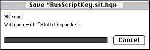
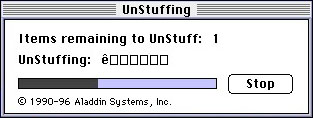
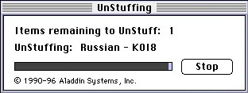

Page index / PC-MacRussian
How to Type Russian Step One
Step One
To be able to type Russian on your Macintosh computer, you need to click here to download the compressed file of Russian script and keyboard layouts. The web browser will automatically decompress the file step by step, as


.Then you will get three downloaded files on your desktop, namely RusScriptKey.sit.hqx, RusScriptKey.sit, and the folder RusScriptKey.
Now go on to the next step.